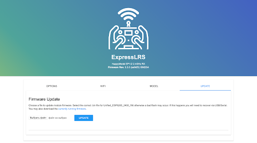
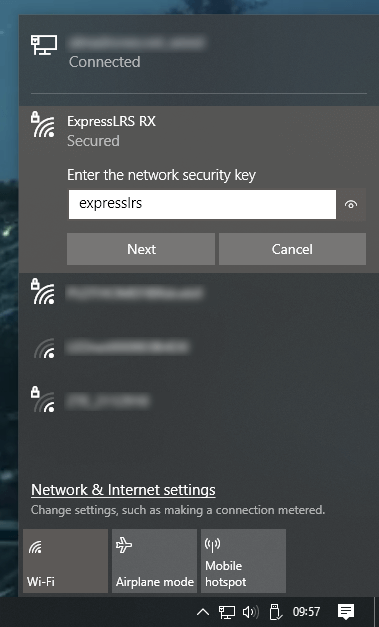
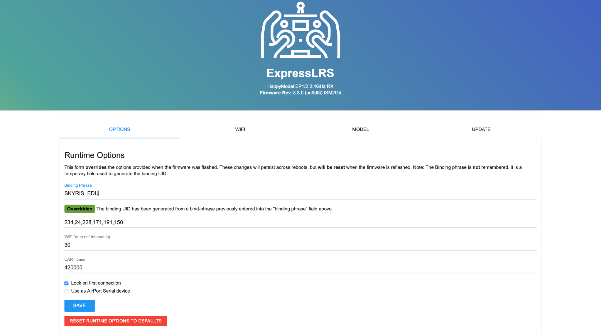

Скачайте файл с прошивкой для приемника __
Подключите полетный контроллер к ПК по USB
Дождитесь когда приемник перейдет в режим “WiFi” (Примерно через 1 мин после подачи питания, приемник начнет быстро мигать зеленым светодиодом)
Подключитесь к приемнику как к точке доступа WiFi:
сеть ExpressLRS RX
пароль: expresslrs
В окне браузера введите адрес 10.0.0.1
Перейдите на вкладку “Update”
Выберите скачанный ранее файл с прошивкой
Нажмите кнопку “Update” - приемник обновит прошивку и перезагрузится

Повторно подключитесь к приемнику по WIFI и запустите окно настроек в браузере (пункты 4 и 5)
Перейдите на вкладку “Options”
В строке “Binding phrase” введите фразу (любое сообщение: не менее 6 символов, латинские буквы, заглавные буквы, спец. знаки, цифры)
Нажмите кнопку “SAVE”